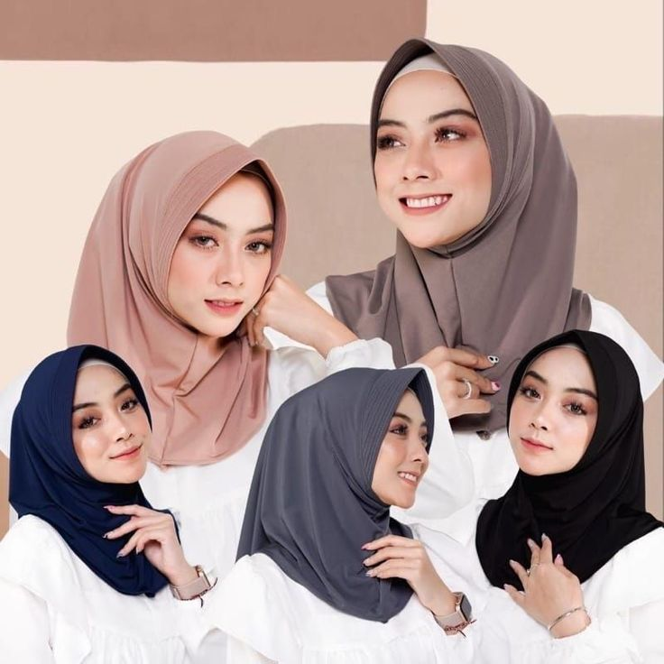

Kekuatan dalam Kelembutan
Di balik setiap langkah wanita, ada kekuatan, kelembutan, dan keindahan alami yang tidak bisa disangkal. Nayra Scarf lahir dari keyakinan bahwa hijab bukan hanya pelengkap, tapi representasi dari identitas dan nilai yang dijunjung tinggi.

Kualitas dan Kenyamanan
Kami berkomitmen untuk menghadirkan produk dengan material terbaik yang tidak hanya indah dipandang, tetapi juga nyaman dikenakan sepanjang hari. Setiap helai scarf adalah cerminan dedikasi kami pada kualitas.